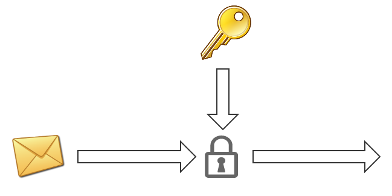
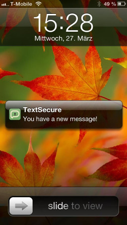

Traditionally, asynchronous messaging systems such as email have relied on protocols like PGP or S/MIME for cryptographic security. These protocols work the way most people are familiar with: one who wishes to receive encrypted email advertises a public key, and those wishing to send encrypted email to that person encrypt their outgoing message with that public key.

While this works, it means that every time anyone sends a message to a given recipient, that message is encrypted with the recipient’s same public key. Over and over again.
If an attacker were to record all of a target’s ciphertext traffic over some extended period of time, and then compromise that one key at any point in the future (perhaps by seizing the device it’s on), they would have the ability to decrypt all of the previously recorded ciphertext traffic belonging to the target.
Forward Secrecy
Modern cryptographic protocols like OTR remedy this situation through the use of ephemeral key exchanges. Rather than always encrypting to the same static public key, peers in a conversation instead negotiate secrets through an ephemeral key exchange. OTR takes this a step further by piggy-backing a new Diffie-Hellman exchange on each exchange of messages in a conversation, which continually ratchets the key material forward.
Since these key exchange parts are ephemeral, recording ciphertext traffic doesn’t help a would-be adversary, since there is no durable key for them to compromise in the future. Even if one’s device is compromised, there is no key material on the device to help an adversary decrypt previously exchanged ciphertext. This property is often referred to as Perfect Forward Secrecy.
Asynchronous Life
OTR was designed for synchronous transports. It works well for desktop IM clients, but is not well-tailored for the mobile environment, where a number of factors such as the OS process model, battery constraints, and network conditions have conspired to make mobile messaging systems asynchronous.
If an application running on iOS wishes to receive messages while it’s in the background, for instance, the only reliable mechanism is to use Apple Push Notifications. Once a push notification is delivered, the user will be presented with a familiar prompt:

But on iOS, the actual app still hasn’t received anything at this point. Only once a user physically taps the prompt or otherwise opens the app does the app itself finally receive the message.
These types of asynchronous transports pose a fundamental problem for forward secrecy protocols: in order to send a message, the app first needs to complete a key exchange. However, to complete a key exchange requires a full round trip of sending a key exchange message and waiting for a key exchange message response – in a world where there is no guarantee of a rapid response.
On platforms like iOS, this would make for a particularly bad user experience:
- Someone has a message to send, but first has to send a key exchange message and wait for a key exchange message response.
- Meanwhile, the recipient of the would-be message gets a visual notification of having received a key exchange message, and has to physically interact with the app before the app has the opportunity to process the key exchange message and respond with one. If the user is away from their device or doesn’t immediately click through to the app, the sender is left waiting.
- The receiving user still hasn’t received a message, though, and has to continue waiting for the actual message to be delivered.
- If the sending user has navigated away from the app, they will then get their own notification that they’ve received a key exchange response from the message recipient, and will have to navigate back to the app in order for the app to be able to process the key exchange response and finally send the encrypted message.
- At this point, the message’s recipient finally receives it.
From a user experience perspective, this is not a tenable model.
Coping With Asynchronous Life
Most secure messaging apps on platforms like iOS do one of two things when presented with this problem: either function synchronously, or revert to the PGP world of static public keys.
For instance, iOS apps like Silent Circle and ChatSecure provide forward secrecy, but are synchronous messaging systems that only function when the app is in the foreground. If someone sends you a message after the app has been out of the foreground for two minutes, you just don’t get the message. This results in an awkward scenario where two users of these apps that wish to communicate with each other need to somehow prearrange to both open the app simultaneously and keep it open for the duration of their conversation.
On the other hand, iOS apps like Threema and the proposed Heml.is support asynchronous messaging, but do not provide forward secrecy. Users have static public keys that are maintained by a server, which anyone else can query and encrypt to without having to engage in a key exchange round trip to the user. This allows for the frictionless asynchronous experience that mobile users have come to expect, but unfortunately relies on an undesirable cryptographic protocol model (the PGP model) that is increasingly being seen as an architectural dead end.
The TextSecure Protocol
TextSecure’s upcoming iOS client (and Android data channel client) uses a simple trick to provide asynchronous messaging while simultaneously providing forward secrecy.
At registration time, the TextSecure client preemptively generates 100 signed key exchange messages and sends them to the server. We call these “prekeys.” A client that wishes to send a secure message to a user for the first time can now:
- Connect to the server and request the destination’s next “prekey.”
- Generate its own key exchange message half.
- Calculate a shared secret with the prekey it received and its own key exchange half.
- Use the shared secret to encrypt the message.
- Package up the prekey id, the locally generated key exchange message, and the ciphertext.
- Send it all in one bundle to the destination client.
The user experience for the sender is ideal: they type a message, hit send, and an encrypted message is immediately sent.
The destination client receives all of this as a single push notification. When the user taps it, the client has everything it needs to calculate the key exchange on its end, immediately decrypt the ciphertext, and display the message.
With the initial key exchange out of the way, both parties can then continue communicating with an OTR-style protocol as usual. Since the server never hands out the same prekey twice (and the client would never accept the same prekey twice), we are able to provide forward secrecy in a fully asynchronous environment.
Moxie Marlinspike, 22 August 2013